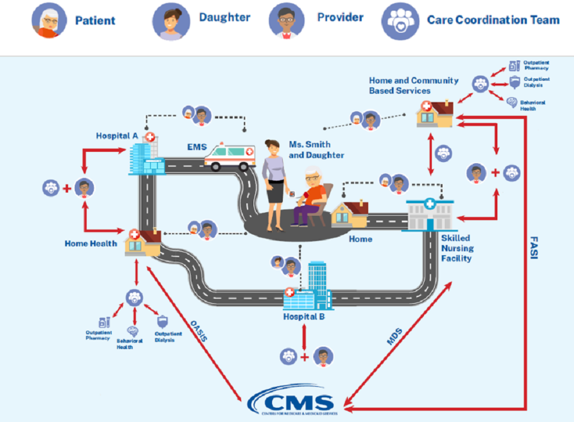
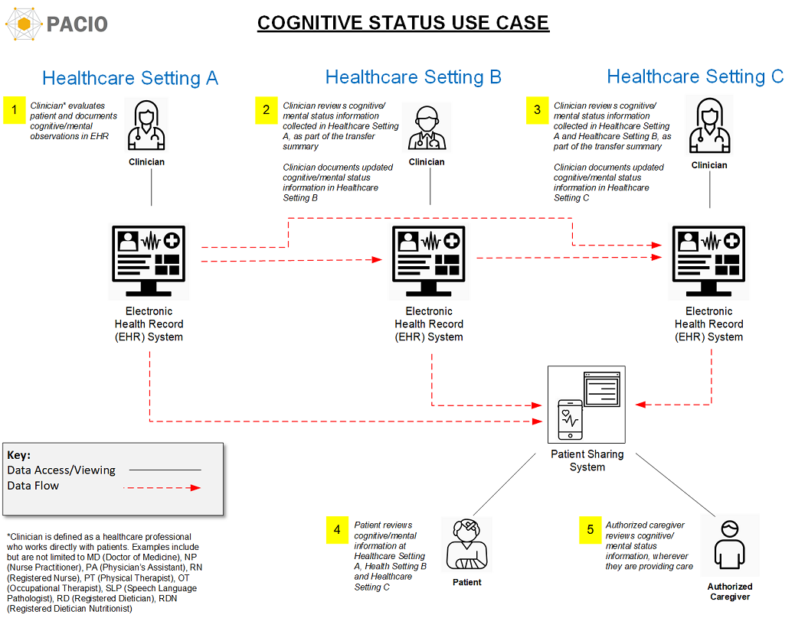

PACIO Cognitive Status Implementation Guide
0.1.0 - STU Ballot
PACIO Cognitive Status Implementation Guide
0.1.0 - STU Ballot
PACIO Cognitive Status Implementation Guide - Local Development build (v0.1.0). See the Directory of published versions
Post-acute care patients are typically complex from a healthcare perspective and have many stops during their healthcare journey (as shown in Figure 1). Cognitive assessments are conducted by professional staff at the healthcare settings. As the patient moves from one healthcare setting to another, it is important that their cognitive data travel with them so that the new healthcare setting has the most complete information about that patient to provide the best care, effectively coordinates care with multiple providers/professionals, and has a picture of an individual’s cognitive status (and changes) over time.
Figure 1, the example post-acute care patient healthcare journey, illustrates a common scenario for an elderly patient moving through the healthcare ecosystem. The journey starts with Ms. Smith in her home. She has a medical event that results in an emergency medical service (EMS) transport to Hospital A. Following her hospital stay, Ms. Smith returns home and receives post-acute care Home Health services. The Home Health agency is coordinating care with multiple professionals and provider organizations including Ms. Smith’s primary physician and her pharmacy, behavioral health provider, and outpatient dialysis provider. During her Home Health encounter, an Outcome and Assessment Information Set (OASIS) is complete which includes cognitive assessments and electronically transmitted to CMS as required. The assessment resides in the agencies EHR and the cognitive assessment shared using FHIR with her and her care team as appropriate.
Ms. Smith has another medical event at home and is transferred to Hospital B. Her cognitive assessment data is shared with the hospital. From Hospital B, Ms. Smith is transferred to a post-acute care Skilled Nursing Facility (SNF). The hospital shares information with the SNF including cognitive assessments. The SNF completes a Minimum Data Set (MDS) assessment which includes cognitive assessments and electronically transmits the assessment data to CMS. The assessment data including cognitive assessments are shared with Ms. Smith and her care team (Physician, Pharmacy, Daughter, etc.). She is discharged from the SNF and returns home with a variety of Home and Community-based Services (HCBS). The SNF shares information with Ms. Smith, her daughter, her physician and HCBS providers to support care transition and coordination. While receiving HCBS, the Functional Assessment Standardized Items (FASI) is completed which includes a cognitive assessment. FASI data is electronically transmitted to CMS. The HCBS provider shares current and longitudinal cognitive assessments with Ms. Smith’s care team and providers with her current cognitive assessment and assessments over time.
As described in above, the below example uses the cognitive assessments from following Post-Acute Care assessments:

Figure 1: Example Post-acute Care Patient Healthcare Journey
In Figure 2, the patient is admitted to Healthcare Setting A due to the result of an event requiring medical attention, such as a stroke. Healthcare setting A performs several cognitive assessments. The cognitive assessments are documented in the electronic health record (EHR) system of Healthcare Setting A.
Healthcare Setting A transfers the patient to Healthcare Setting B. When the patient arrives at Healthcare Setting B, their clinicians can retrieve the cognitive assessments performed on the patient at Healthcare Setting A, as part of the transfer summary, using the profiles for exchanging cognitive status data defined in this Implementation Guide. Additionally, during the patients stay in Healthcare setting B, the clinician performs and documents additional cognitive assessments.
Healthcare Setting B transfers the patient to Healthcare Setting C. When the patient arrives at Healthcare Setting C, their clinicians can retrieve the cognitive assessments performed on the patient at Healthcare Setting A and Healthcare Setting B, as part of the transfer summary, using the profiles for exchanging cognitive status data defined in this Implementation Guide.
Authorized caregivers, including the patient, their family, and clinicians can also access the assessments from Healthcare Setting A, Healthcare Setting B, and Healthcare Setting C at any time through a patient sharing system (mobile/web application), so that they are informed about the patient’s care, can track progress, and can be more engaged in their healthcare decisions.

Figure 2: Cognitive Status Use Case
IG © 2020+ HL7 Patient Care Work Group. Package hl7.fhir.us.pacio-cs#0.1.0 based on FHIR 4.0.1. Generated 2021-03-12
Links: Table of Contents |
QA Report
| Version History |
Search |
 |
Propose a change
|
Propose a change